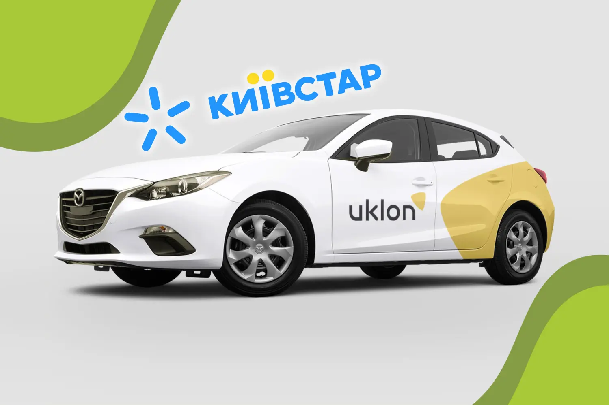
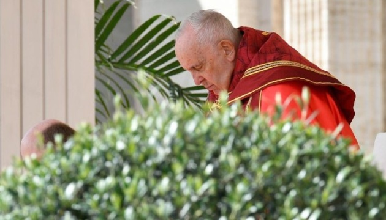
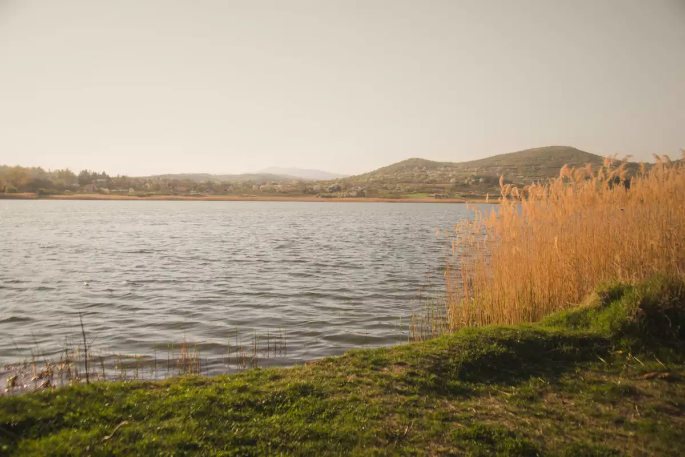

«Київстар» купує 97% компанії Uklon за 155,2 мільйона доларів
Провідний український оператор електронних комунікацій «Київстар» уклав угоду про купівлю 97% корпоративних прав продуктової ІТ-компанії Uklon, яка розробила онлайн-платформу й застосунок для замовлення авто. Вартість угоди становитиме 155,2 мільйона доларів. Завершення транзакції очікують у квітні 2025 року після виконання всіх стандартних умов. Про це йдеться в пресрелізі материнської компанії «Київстар» – VEON.
Ця інвестиція стане важливим кроком у втіленні стратегії «Київстар» із розбудови цілісної цифрової екосистеми й частиною виконання інвестиційних зобов’язань VEON на суму 1 мільярд доларів США впродовж 2023-2027 років.
Наразі Uklon працює у 27 містах України та на території туристичного комплексу Буковель, об’єднуючи понад 100 тисяч активних водіїв-партнерів на своїй платформі. Щомісяця користувачі роблять понад 10 мільйонів замовлень. У 2024 році компанія забезпечила понад 100 мільйонів поїздок і більше ніж 3 мільйони доставлянь. З 2023 року сервіс розпочав міжнародне розширення, запустивши свої послуги в Узбекистані.
«Київстар послідовно перетворюється з оператора електронних комунікацій на повноцінну цифрову екосистему, що охоплює ключові сфери життя українців. Наша стратегія передбачає не просто надання зв’язку, а створення комплексного цифрового середовища, де електронні комунікації слугують базовою платформою для впровадження інноваційних сервісів», – зазначає Олександр Комаров, очільник «Київстар».
Після підписання угоди «Київстар» і Uklon залишаться окремими підприємствами. Команда Uklon на чолі з генеральним директором Сергієм Гришковим у повному складі продовжить працювати над розвитком продуктів і сервісів компанії в Україні й на інших ринках.
«Уся наша команда під моїм безпосереднім керівництвом у ролі очільника Uklon у повному складі продовжить працювати над розвитком продуктів і сервісів компанії в Україні та на інших ринках», – підтвердив Сергій Гришков у своєму дописі у Facebook.
Генеральний директор VEON Group і голова наглядової ради «Київстар» Каан Терзіоглу заявив, що компанія вивчатиме можливості розширення Uklon за межі України й Узбекистану за підтримки цифрових операторів у Казахстані, Пакистані й Бангладеш.
За словами Дмитра Дубровського, співзасновника Uklon, завдяки підтримці «Київстар» компанія отримає додаткові можливості й досвід для подальшого вдосконалення своїх сервісів і продуктів, щоб надати більше користі клієнтам і партнерам.
«Після завершення угоди ми вкладатимемо кошти в розширення екосистеми сервісів і продуктів Uklon, зокрема й багатофункціональних застосунків для пасажирів і водіїв, у розвиток взаємодії між нашими підприємствами в Україні, в подальше розширення Uklon до інших країн присутності VEON, а також на нові ринки», – зазначила Зоя Дроншкевич, директорка з розвитку бізнесу й корпоративної стратегії «Київстар».
Компанія Dragon Capital була ексклюзивним фінансовим радником Uklon у межах цієї угоди.
Нагадаємо, у грудні 2024 року VEON Group уклала угоду з компаніями американського підприємця Ілона Маска Starlink і підрозділом SpaceX щодо впровадження в Україні супутникового зв’язку Direct to Cell.
Чоловік утік із зали суду з дружиною на спині, щоб уникнути розлучення
Жінка на прізвище Чень вирішила дати своєму чоловікові ще один шанс, щоб відновити їхній шлюб.
Нещодавній інцидент у залі суду провінції Сичуань (Китай) викликав серйозні побоювання з приводу розгляду справ про домашнє насильство. Під час шлюборозлучного процесу чоловік на прізвище Лі насильно виніс свою дружину Чень із кімнати, намагаючись уникнути їхнього розставання. Про це пише South China Morning Post.
Жінка подала на розлучення після 20 років шлюбу. За її словами, всі ці роки вона потерпала від домашнього насильства та агресивної поведінки чоловіка в стані алкогольного сп’яніння.
Пара, у якої є два сини й дочка, зіткнулася з проблемою після того, як суд відхилив прохання Чень про розлучення, пославшись на “глибокий емоційний зв’язок” і явне небажання Лі розірвати шлюб.
Апеляція жінки призвела до повторного судового розгляду, під час якого напруженість загострилася. Під час цього засідання Лі, переповнений емоціями, підняв Чень з підлоги, закинув собі на спину і вибіг із зали суду, залишивши її кричати про допомогу. Судові пристави швидко втрутилися і відчитали його за його дії.
У письмовому вибаченні, представленому пізніше, Лі висловив жаль з приводу своєї поведінки, визнавши всю серйозність своєї помилки.“У стані емоційного збудження я помилково вирішив, що збираюся розлучитися з апелянткою, тож я виніс її із зали суду, ігноруючи вказівки суддів і судових приставів, які намагалися зупинити мої крайні дії”, — написав він.
Чоловік запевнив суд, що не повторить подібних екстремальних дій. Зрештою, за посередництва суду, пара не розлучилася. Чень погодився дати Лі ще один шанс відновити їхній шлюб. Цей вибір викликав хвилю занепокоєння і критики в інтернеті, багато хто ставить під сумнів розуміння судом проблеми домашнього насильства і загальне ставлення правової системи до подібних справ.

Папа Франциск більше не потребує штучної вентиляції легень
Папа Франциск більше не потребує штучної вентиляції легенів у нічний час і має менше кисневої терапії вдень.
Як передає Укрінформ, про це повідомляє Vatican News з посиланням на пресслужбу Святого Престолу.
Клінічний стан Святішого Отця поліпшується, призупинено неінвазивну механічну вентиляцію легень, він також менше потребує високопотокової кисневої терапії, рухова та дихальна системи відновлюються, ідеться в повідомленні.
У середу вранці папа очолив богослужіння на честь Святого Йосифа.
Лікарі повідомили, що легеневі інфекції понтифіка перебувають під контролем, хоча й не ліквідовані. Показники його клінічних аналізів перебувають у межах норми.
Папа Франциск лікується від двосторонньої пневмонії в римській лікарні «Джемеллі» з 14 лютого.

Сонячне світло несподівано сприяє зростанню рівня N2O в атмосфері
Нове дослідження данських та іспанських вчених відкрило невідомий раніше механізм утворення закису азоту в поверхневих водах, що може пояснити зростання концентрації цього потужного парникового газу в атмосфері швидшими темпами, ніж прогнозувалося.
Хоча вуглекислий газ (CO2) часто опиняється в центрі дискусій про зміну клімату, закис азоту (N2O) представляє не менш серйозну загрозу. Молекула N2O у 300 разів потужніша за CO2 як парниковий газ, що робить її критично важливим фактором глобального потепління. Нещодавнє дослідження, опубліковане в журналі Science, виявило новий абіотичний шлях утворення N2O, що може суттєво впливати на кліматичні зміни.
На відміну від біологічних процесів, які раніше вважалися основним джерелом закису азоту у водних середовищах, новий шлях – фотохімоденітрифікація – відбувається під впливом сонячного світла без участі живих організмів. Дослідники виявили, що цей процес може виробляти N2O зі швидкістю, що перевищує традиційні біологічні методи.
Для дослідження науковці відібрали зразки води з прісноводних і прибережних морських систем. Вони помістили ці зразки у кварцові флакони та піддали їх впливу сонячного світла, спостерігаючи за виділенням закису азоту.
Щоб виключити участь мікробів у цьому процесі, дослідники додали до зразків біоцид HgCl2. Важливо, що це не вплинуло на утворення N2O, що підтвердило абіотичну природу процесу. Використовуючи ізотопні трекери, мічені азотом-15, вчені визначили, що нітрити є основним субстратом, який безпосередньо бере участь у фотохімоденітрифікації.
Експерименти показали пряму залежність між інтенсивністю ультрафіолетового випромінювання та кількістю виробленого закису азоту. Проте точні хімічні механізми цього процесу все ще залишаються не повністю зрозумілими та потребують додаткових досліджень.
Закис азоту потрапляє в атмосферу різними шляхами – від використання азотних добрив у сільському господарстві до природних процесів у ґрунтах і морських відкладеннях. Раніше вважалося, що мікроорганізми, такі як аміакоокислювальні бактерії та археї, є основними виробниками N2O в глобальному масштабі.
Проте рівень закису азоту в атмосфері зростає швидше, ніж прогнозувала Міжурядова група експертів з питань зміни клімату (МГЕЗК). Відкриття фотохімоденітрифікації може пояснити цю розбіжність, заповнюючи критичну прогалину в нашому розумінні кругообігу азоту.
Дослідники припускають, що цей шлях може бути особливо значущим у евтрофних прісноводних водоймах, прибережних регіонах та висхідних морських районах – ключових точках викидів N2O. Інтеграція цього нового механізму в кліматичні моделі може суттєво підвищити точність прогнозів та ефективність стратегій пом’якшення наслідків зміни клімату.
Для забезпечення повного розуміння глобальних наслідків відкриття необхідно провести подібні експерименти в різних географічних регіонах та екологічних умовах. Це дозволить краще оцінити внесок фотохімоденітрифікації в загальний баланс закису азоту в атмосфері та розробити більш точні моделі прогнозування кліматичних змін.